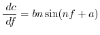

The chain rule is used to find the partial derivatives of the feature pdf with respect to the atomic coordinates. Thus, only the derivatives of the pdf with respect to the features are listed here.
The pdf for a geometric feature  (e.g., distance, angle,
dihedral angle) is
(e.g., distance, angle,
dihedral angle) is
The first derivatives with respect to feature  are:
are:
| (A.63) |
The relative heavy violation with respect to  is given as:
is given as:
The polymodal pdf for a geometric feature  (e.g., distance, angle,
dihedral angle) is
(e.g., distance, angle,
dihedral angle) is
| (A.66) |
The first derivatives with respect to feature  are:
are:
When any of the normalized deviations
is
large, there are numerical instabilities in calculating the derivatives
because
are arguments to the exp function. Robustness is
ensured as follows.
The `effective' normalized deviation is used in all the equations
above when the magnitude of normalized violation  is larger than
cutoff rgauss1 (10 for double precision). This scheme works up
to rgauss2 (200 for double precision); violations larger than
that are ignored. This trick is equivalent
to increasing the standard deviation
. A slight disadvantage
is that there is a discontinuity in the first derivatives at rgauss1.
However, if continuity were imposed,
the range would not be extended (this is equivalent to linearizing the
Gaussian, but since it is already linear for large deviations, a
linearization with derivatives smoothness would not introduce much
change at all).
is larger than
cutoff rgauss1 (10 for double precision). This scheme works up
to rgauss2 (200 for double precision); violations larger than
that are ignored. This trick is equivalent
to increasing the standard deviation
. A slight disadvantage
is that there is a discontinuity in the first derivatives at rgauss1.
However, if continuity were imposed,
the range would not be extended (this is equivalent to linearizing the
Gaussian, but since it is already linear for large deviations, a
linearization with derivatives smoothness would not introduce much
change at all).
| (A.68) | |||
| (A.69) | |||
| (A.70) | |||
| (A.71) | |||
| (A.72) | |||
| (A.73) |
Now, Eqs. A.65-A.67 are used with
instead
of  . For single precision,
, rgauss1 = 4, rgauss2 = 100.
. For single precision,
, rgauss1 = 4, rgauss2 = 100.
The relative heavy violation with respect to  is given as:
is given as:
| (A.74) |
The polymodal pdf for a geometric feature
 (e.g., a pair of
dihedral angles) is
(e.g., a pair of
dihedral angles) is
A corresponding restraint  in the sum that defines the objective
function
in the sum that defines the objective
function  is (as before, this is scaled by
):
is (as before, this is scaled by
):
| (A.77) |
The first derivatives with respect to features  and
and  are:
are:
The relative heavy violation with respect to  is given as:
is given as:
| (A.80) |
This is like the left half of a single Gaussian restraint:
This is like the right half of a single Gaussian restraint:
This is usually used for dihedral angles  :
:
|  | (A.84) |
The first derivatives are:
| (A.87) | |||
| (A.88) |
The violations of this restraint are always reported as zero.
Usually used for non-bonded distances:
The first derivatives are:
| (A.90) | |||
| (A.91) |
The violations of this restraint are always reported as zero.
Any restraint form can be represented by a cubic spline [Press et al., 1992]:
The first derivatives are:
 |
(A.97) |
The values of  and
beyond
and
beyond  and
are obtained by linear
interpolation from the termini. A violation of the restraint is calculated
by finding the global minimum. A relative violation is estimated by using
a standard deviation (e.g., force constant) obtained by fitting
a parabola to the global minimum.
and
are obtained by linear
interpolation from the termini. A violation of the restraint is calculated
by finding the global minimum. A relative violation is estimated by using
a standard deviation (e.g., force constant) obtained by fitting
a parabola to the global minimum.
Variable spacing of spline points could be used to save on memory. However, this would increase the execution time, so it is not used.
To calculate the relative heavy violation, the feature value
that results in the smallest value of the restraint is obtained by
interpolation, and a Gaussian function is fitted locally around this value to
obtain the standard deviation  . These are then used in
Eq. A.64.
. These are then used in
Eq. A.64.
The asymmetry penalty added to the objective function is defined as
For each
, the first derivatives are:
| (A.99) | |||
| (A.100) |